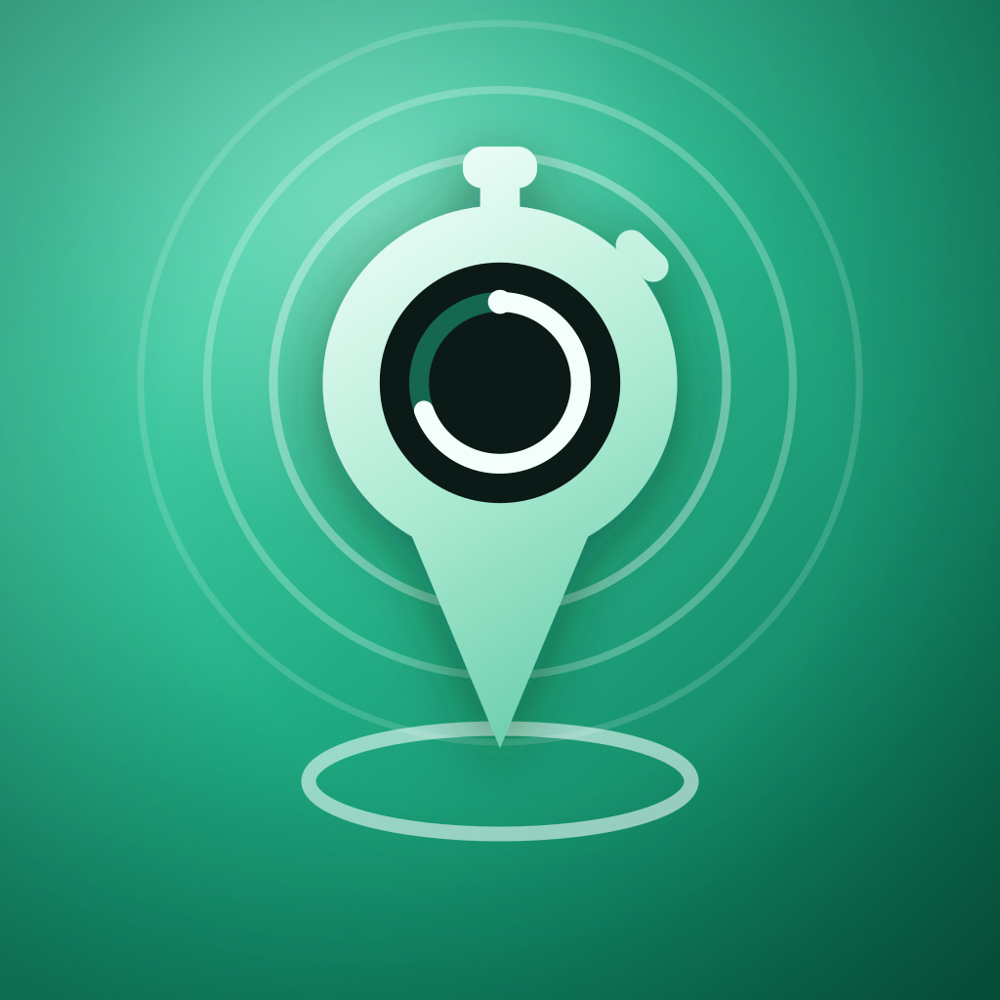
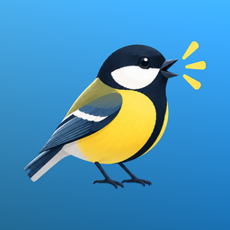

Apper

Zonio – TimeføringAutomatisk timeregnskap · Personvern · English
Kvirr! – Logg og lær norske fuglerFugleapp · Personvern · English
Zonio – TimeføringAutomatisk timeregnskap · Personvern · English
Kvirr! – Logg og lær norske fuglerFugleapp · Personvern · English